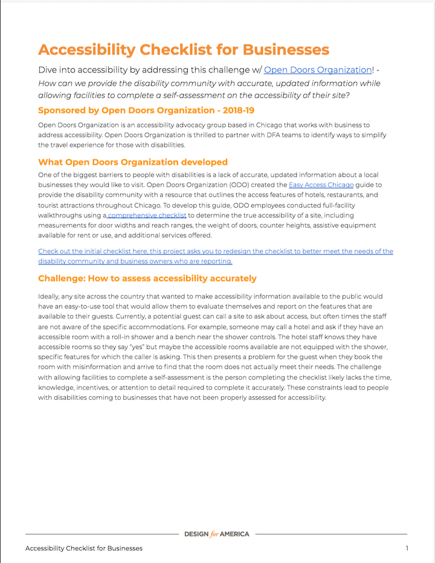

This past summer I interned at Design for America's National Office in Evanston. One of the projects I worked on was conducting usability tests to iterate the Challenge Library Interface. DFA's Challenge Library is a Google Doc that holds various projects for DFA studios across the nation to use.
Timeframe: June 2019-August 2019
My Role: User Researcher
- Conducted usability tests
- Scoped challenges and built relationships with stakeholders in the Chicago area
- Wrote content for the Challenge Library
Methods: Between-subjects tests, think aloud method, wireframes, paper prototypes, and feedback sessions
Before the starting the first round of usability tests I put together a script and tasks for the user to go through to ensure consistency. My main goal was to see if users understood the given challenge and knew how to take the next steps to start working on the challenge.
Since I now had an idea of some changes I would like to make I decided to create a paper prototype. I printed out a challenge and cut it out to quickly rearrange the information and add sketches. This allowed me to really see what I wanted to change before making changes digitally. Using this method also made it easy for my boss to annotate my decisions and offer feedback.

For this round of testing I decided to use the between-subjects method so I could check if there was a clear improvement between the old and iterated interface. The new interface was deemed less overwhelming, but was still seen as confusing due to the content and structure.

Recognizing the patterns allowed me to create a wireframe that could be translated to any challenge in the library. I sketched out multiple wireframes and then organized feedback sessions with the DFA Fellows in order to decide on which one worked best.
Changes I incorporated
After all of the usability tests and feedback sessions I recreated the Google Doc interface. Users reported feeling that the new interface was welcoming and offered more guidance.
Here is the brand new "next steps" portion which is personalized to each challenge and gives students a solid starting point.
Here is one of the three brand new climate change challenges I helped scope and write the content for.
Working on this project taught me how it is important to not jump to assumptions about your audience, even when you might be part of it. As a DFA member myself I had to put aside my own feelings and instead listen to the findings from usability tests and feedback.